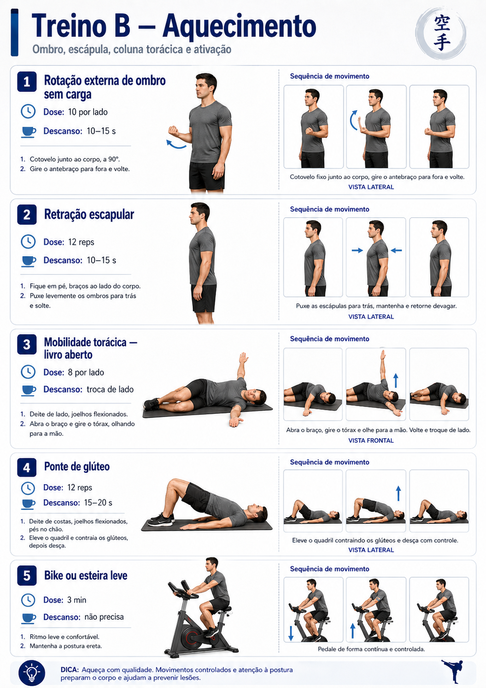
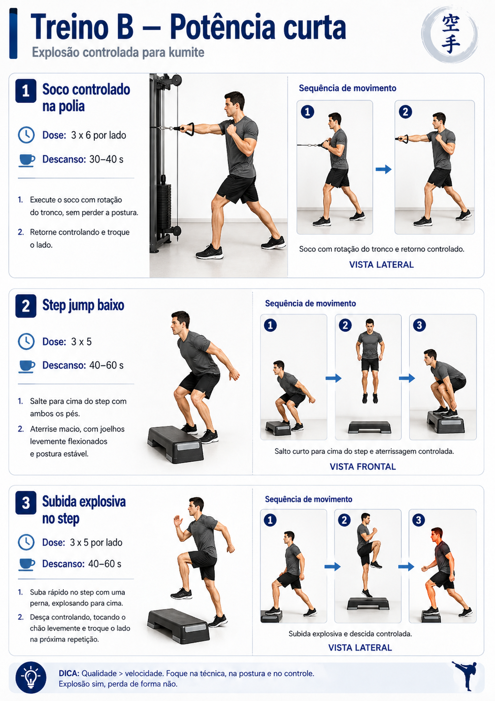
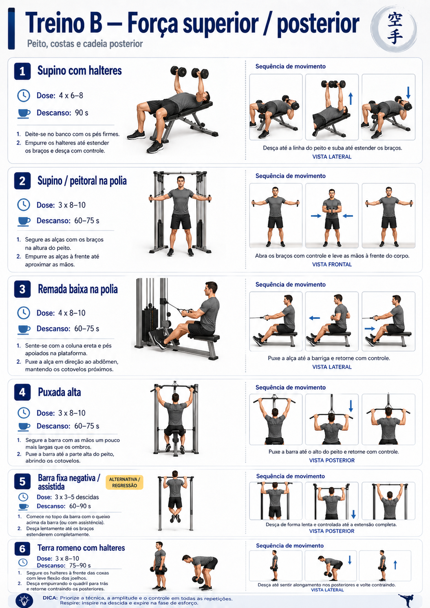
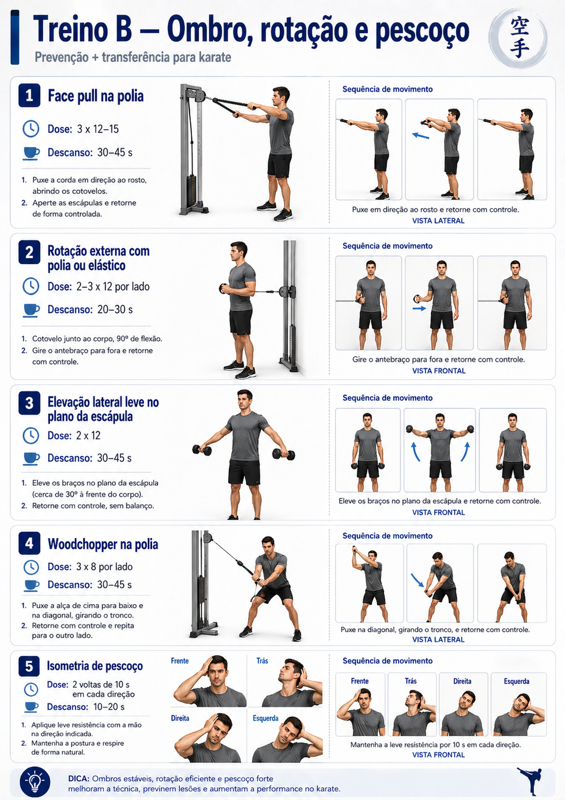

30–40 minTreino B
Superior, ombro, lombar, rotação e potência
Complementa kata e kumite: potência curta, ombro saudável, costas fortes e rotação.

Aquecimento
Imagem-guia + exercícios do bloco
Bike ou esteira leve
3 mindescanso: sem descanso
Rotação externa de ombro sem carga
15 por ladodescanso: troca de lado
Retração escapular
15 repsdescanso: sem descanso
Mobilidade torácica — livro aberto
8 por ladodescanso: troca de lado
Ponte de glúteo
15 repsdescanso: 20–30 s

Potência curta
Imagem-guia + exercícios do bloco
Soco controlado na polia
3 x 6 por ladodescanso: 45–75 s
Step jump baixo
3 x 3 → 3 x 5descanso: 60–90 s
Subida explosiva no step
3 x 3–5 por pernadescanso: 60–90 s

Força superior e posterior
Imagem-guia + exercícios do bloco
Supino com halteres
3 x 6–8descanso: 90 s
Supino / peitoral na polia
3 x 8–12descanso: 60–90 s
Remada baixa na polia
4 x 8–10descanso: 60–90 s
Puxada alta
3 x 8–10descanso: 60–90 s
Barra fixa negativa / assistida
3 x 3–5 descidasdescanso: 75–120 s
Terra romeno com halteres
3 x 8–10descanso: 90 s

Ombro, rotação e pescoço
Imagem-guia + exercícios do bloco
Face pull na polia
3 x 12–15descanso: 45–60 s
Rotação externa com polia ou elástico
2–3 x 12 por ladodescanso: 30–45 s
Elevação lateral leve no plano da escápula
2 x 12descanso: 45–60 s
Woodchopper na polia
3 x 8 por ladodescanso: 45–60 s
Isometria de pescoço
2 voltas de 10 s por direçãodescanso: 20–30 s